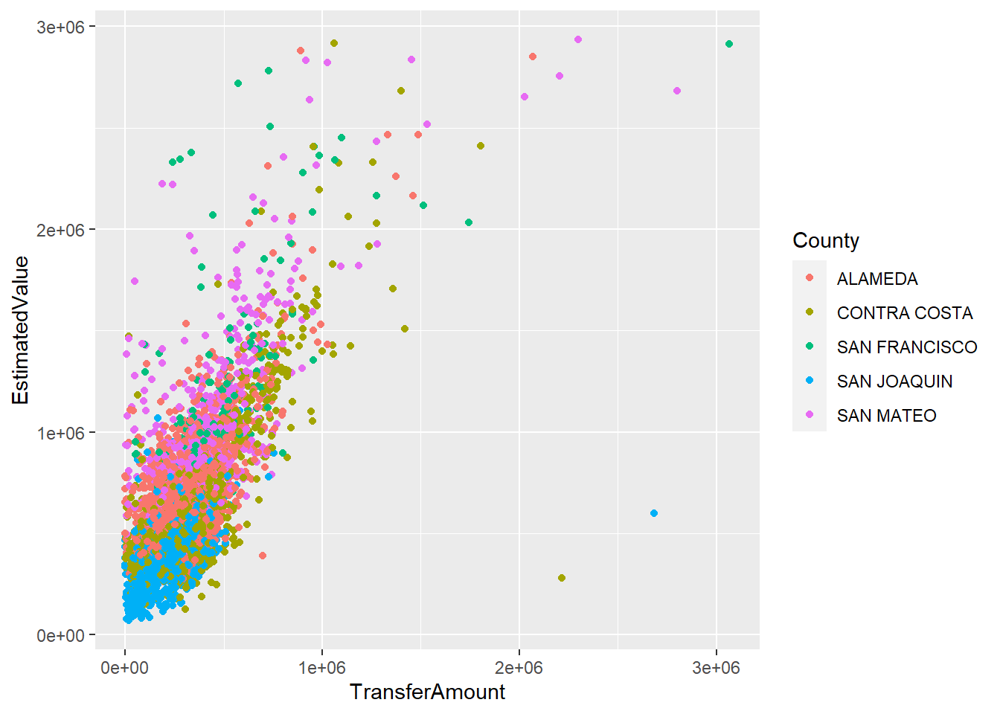

library(dplyr)
library(ggplot2)
library(readr)Introduction to R-Markdown
Data Wrangling and Tidy Data
We will focus on data wrangling, including importing data, changing data types, sub-setting variables and observations, and calculating basic functions.
Question 1: Importing Data
Download the California foreclosure auctions dataset and save it to a folder on your desktop. Then load the data into R and save it as a data frame.
#setwd(dirname(rstudioapi::getActiveDocumentContext()$path)) # set working directory to current file directory
data <- read.csv("California Foreclosure Auctions_updated.csv")Question 2: Check out the Data
What is the observational unit of this data? Is the data in tidy format? What needs to be cleaned up about this data?
(head(data)) RadarID County Address City State Zip
1 P10B875B SAN JOAQUIN 4315 LEGACY CT STOCKTON CA 95219
2 P10C21B8 SAN JOAQUIN 2126 BARTRAM RUN WAY STOCKTON CA 95212
3 P118636F SAN MATEO 91 EL PORTAL WAY DALY CITY CA 94015
4 P119F4E3 SAN JOAQUIN 2564 KEYSER DR STOCKTON CA 95212
5 P1208C6F CONTRA COSTA 4003 ROLAND DR CONCORD CA 94521
6 P12524CA SAN JOAQUIN 3022 STEFANO DR STOCKTON CA 95212
Owner OwnerFirstName OwnerLastName PropertyType Units SqFt
1 MAGALI,MYLO C & CHARIS MYLO MAGALI SFR 1 1408
2 REYNOLDS,CLAUDE JR CLAUDE REYNOLDS SFR 0 2452
3 TARAKANOV,MARK MARK TARAKANOV SFR 1 1900
4 YANG,XUGUANG & RUILING XUGUANG YANG SFR 1 2398
5 HAWKINS,EDITH M TR EDITH HAWKINS SFR 1 1308
6 KY,DOUK DOUK KY SFR 1 2632
YearBuilt Beds Baths LotSize Pool Stories EstimatedValue
1 2000 3 3 4430 0 2 $300,143.00
2 2006 4 3 5754 0 2 $336,965.00
3 1962 4 3 3610 0 1 $1,223,282.00
4 2004 4 3 6110 0 2 $301,294.00
5 1958 3 2 6660 0 1 $435,610.00
6 2004 4 3 6000 0 2 $347,707.00
FirstLoanLender FirstLoanDate FirstLoanAmount TransferType
1 IMORTGAGE 8/24/2016 229000 TrusteesDeed-3rd
2 PROSPECT MORTGAGE INC 11/30/2009 153750 TrusteesDeed-3rd
3 SIERRA PACIFIC MTG 5/27/2015 567000 TrusteesDeed-3rd
4 PARKSIDE LENDING 1/4/2013 130000 TrusteesDeed-3rd
5 RPM MORTGAGE 3/27/2013 249300 TrusteesDeed-3rd
6 PLATINUM HOME MORTGAGE CORP 5/28/2010 216015 TrusteesDeed-3rd
TransferDate TransferAmount TransferBuyer
1 9/8/2009 $132,862.00 FORTIFIED FINANCIAL
2 9/25/2009 $128,637.00 LENDERS FINANCIAL GROUP LLC
3 5/17/2010 $592,100.00 DASH STRATEGIES LLC
4 8/5/2009 $129,000.00 LA-SAC HOLDINGS LLC
5 10/15/2010 $226,500.00 DECK,RANDALL W
6 9/8/2009 $142,000.00 ELECTRONIC MTG SVCNG
TransferSeller TransferDownPaymentPercent CartelCompany
1 QUALITY LOAN SERVICE CORP NA 1
2 NDEX WEST LLC NA 1
3 NDEX WEST LLC NA 1
4 CALIFORNIA RECONVEYANCE CO NA 1
5 QUALITY LOAN SERVICE CORP NA 1
6 CALIFORNIA RECONVEYANCE CO NA 1
DaysToSale
1 1914
2 0
3 270
4 261
5 89
6 262(colnames(data)) [1] "RadarID" "County"
[3] "Address" "City"
[5] "State" "Zip"
[7] "Owner" "OwnerFirstName"
[9] "OwnerLastName" "PropertyType"
[11] "Units" "SqFt"
[13] "YearBuilt" "Beds"
[15] "Baths" "LotSize"
[17] "Pool" "Stories"
[19] "EstimatedValue" "FirstLoanLender"
[21] "FirstLoanDate" "FirstLoanAmount"
[23] "TransferType" "TransferDate"
[25] "TransferAmount" "TransferBuyer"
[27] "TransferSeller" "TransferDownPaymentPercent"
[29] "CartelCompany" "DaysToSale" (summary(data)) RadarID County Address City
Length:16677 Length:16677 Length:16677 Length:16677
Class :character Class :character Class :character Class :character
Mode :character Mode :character Mode :character Mode :character
State Zip Owner OwnerFirstName
Length:16677 Min. :94002 Length:16677 Length:16677
Class :character 1st Qu.:94531 Class :character Class :character
Mode :character Median :94583 Mode :character Mode :character
Mean :94758
3rd Qu.:95206
Max. :95632
NA's :2
OwnerLastName PropertyType Units SqFt
Length:16677 Length:16677 Min. : 0.000 Min. : 410
Class :character Class :character 1st Qu.: 1.000 1st Qu.:1154
Mode :character Mode :character Median : 1.000 Median :1500
Mean : 1.257 Mean :1687
3rd Qu.: 1.000 3rd Qu.:2040
Max. :585.000 Max. :9327
NA's :2 NA's :2
YearBuilt Beds Baths LotSize
Min. : 0 Min. : 0.000 Min. : 0.000 Min. : 0
1st Qu.:1951 1st Qu.: 3.000 1st Qu.: 2.000 1st Qu.: 4876
Median :1972 Median : 3.000 Median : 2.000 Median : 5920
Mean :1969 Mean : 3.322 Mean : 2.145 Mean : 41010
3rd Qu.:1994 3rd Qu.: 4.000 3rd Qu.: 3.000 3rd Qu.: 7315
Max. :2015 Max. :12.000 Max. :12.000 Max. :121445280
NA's :2 NA's :2 NA's :2 NA's :2
Pool Stories EstimatedValue FirstLoanLender
Min. :0.0000 Min. : 0.000 Length:16677 Length:16677
1st Qu.:0.0000 1st Qu.: 1.000 Class :character Class :character
Median :0.0000 Median : 1.000 Mode :character Mode :character
Mean :0.1008 Mean : 1.339
3rd Qu.:0.0000 3rd Qu.: 2.000
Max. :1.0000 Max. :30.000
NA's :2 NA's :2
FirstLoanDate FirstLoanAmount TransferType TransferDate
Length:16677 Min. :0.000e+00 Length:16677 Length:16677
Class :character 1st Qu.:1.776e+05 Class :character Class :character
Mode :character Median :2.686e+05 Mode :character Mode :character
Mean :2.023e+06
3rd Qu.:3.858e+05
Max. :1.194e+09
NA's :2536
TransferAmount TransferBuyer TransferSeller
Length:16677 Length:16677 Length:16677
Class :character Class :character Class :character
Mode :character Mode :character Mode :character
TransferDownPaymentPercent CartelCompany DaysToSale
Min. :0.000 Min. :0.00000 Min. : 0.00
1st Qu.:0.025 1st Qu.:0.00000 1st Qu.: 0.00
Median :0.200 Median :0.00000 Median : 53.00
Mean :0.305 Mean :0.09061 Mean : 87.59
3rd Qu.:0.350 3rd Qu.:0.00000 3rd Qu.: 126.00
Max. :1.000 Max. :1.00000 Max. :2397.00
NA's :10063 NA's :2 NA's :6616 JK answer: From what I understand about what’s considered “tidy”, I don’t believe this is “tidy”. What I understand is what’s considered “tidy” in R (as opposed to “clean data” in other senses), the data has rows for each entry of data and columns for all potential variables; in that sense, this data qualifies for all of those. But need to also have entries in all cells and there are definitely some missing data.
Question 3: Subset Rows and Columns
Create a new data frame that contains only the auctions that are “TrusteesDeed-3rd” type, and only the variables required to uniquely identify each observation, along with “TransferAmount”. (Bonus: make a scatter plot of the estimated value vs the final sale price and color code it by County - make some interpretations)
# new dataframe of TransferType
# (I'm guessing "uniquely identify each observation" is implying the index of the data)
td3 <- data %>% filter(TransferType=="TrusteesDeed-3rd") %>% select(TransferType,TransferAmount)
head(td3) TransferType TransferAmount
1 TrusteesDeed-3rd $132,862.00
2 TrusteesDeed-3rd $128,637.00
3 TrusteesDeed-3rd $592,100.00
4 TrusteesDeed-3rd $129,000.00
5 TrusteesDeed-3rd $226,500.00
6 TrusteesDeed-3rd $142,000.00 # Bonus scatter plot (Estimated value vs Final Price; color coded by county)
# parse_number() (from readr) apparently converts to numeric while ignoring "$"s & commas
data$TransferAmount <- parse_number(data$TransferAmount)
data$EstimatedValue <- parse_number(data$EstimatedValue)
# scatter plot
data %>% filter(TransferType=="TrusteesDeed-3rd") %>%
ggplot(aes(x=TransferAmount,y=EstimatedValue,col=County)) +
geom_point() 
Question 4: Tidy the Data
If we wish to treat the County as the observational unit, then we must tidy the data. We can do this by averaging across all observations within the new observational unit. Create a new data.frame that contains the County variable along with average transfer price.
tidy_county <- data %>%
group_by(County) %>%
mutate(avg_transfer = mean(TransferAmount,na.rm = TRUE)) %>%
select(County,avg_transfer)
head(tidy_county)# A tibble: 6 × 2
# Groups: County [3]
County avg_transfer
<chr> <dbl>
1 SAN JOAQUIN 166472.
2 SAN JOAQUIN 166472.
3 SAN MATEO 475335.
4 SAN JOAQUIN 166472.
5 CONTRA COSTA 263496.
6 SAN JOAQUIN 166472.Question 5: Calculate By Groups
What is the average sale price for “TrusteesDeed-3rd” transfers for each county? Which county is the most expensive?
tidy_county_td3 <- data %>%
filter(TransferType=="TrusteesDeed-3rd") %>%
group_by(County) %>%
mutate(avg_transfer = mean(TransferAmount,na.rm = TRUE)) %>%
select(County,avg_transfer)
distinct(tidy_county_td3)# A tibble: 5 × 2
# Groups: County [5]
County avg_transfer
<chr> <dbl>
1 SAN JOAQUIN 144512.
2 SAN MATEO 405744.
3 CONTRA COSTA 226612.
4 ALAMEDA 259352.
5 SAN FRANCISCO 514141.Final Questions:
- What was the main point of today’s content?
To review relatively basic data reading, EDA, and tidying in R.
- What is the muddiest point of the class so far?
I use more Python than R, so I often need to remind myself of many coding syntax in R. (But fortunately I love linear algebra so at least I don’t have to worry about that aspect as much! :D)